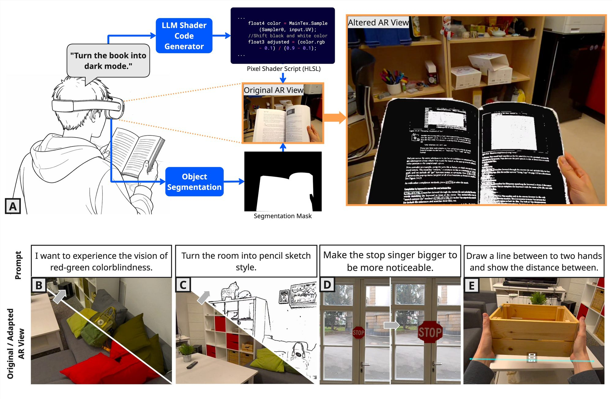
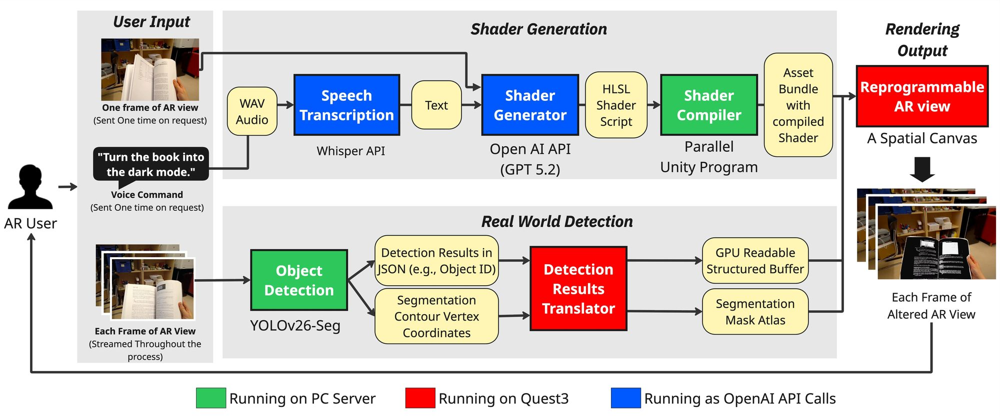
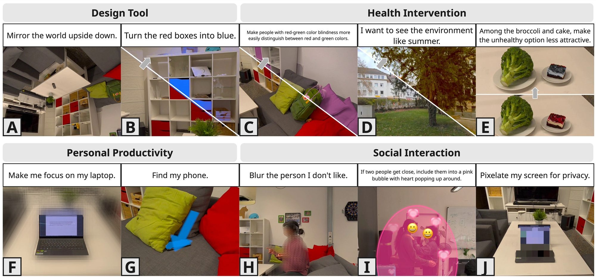
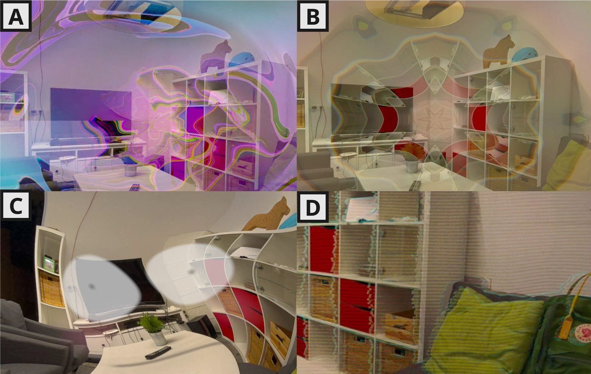

ShadAR
Real-time Prompting On-demand Visual Augmentation in Augmented Reality
TU Darmstadt
UIST '26 · Detroit, MI, USA

Abstract
Augmented Reality can reshape our visual perception (e.g., simulating color blindness) yet such effects are typically pre-programmed by experts, making visual augmentation static and inflexible. We introduce ShadAR, an AR system that allows users to describe expected visual augmentations (e.g., "Blur all people") for changing their vision in real time. ShadAR can graphically manipulate AR passthrough real-time via shader injection. When receiving a user’s prompt, ShadAR uses LLMs (GPT5.2) to interpret the user’s intent, analyzes the user’s view with object detection (YOLOv26), generates a pixel shader, and applies it to the targeted region on AR passthrough. To understand usage pattern, we invited 21 HCI researchers to use ShadAR, identifying four application domains (design, health, productivity, and social interaction) and two prompt-framing patterns: procedural prompts specifying what to modify and how (“Highlight the book.”), and end-goal prompts conveying desired mental/behavioral states (“Make me laugh.”). Such end-goal prompts suggest a future in which users specify outcomes (e.g., “Make me not miss my flight”) while the system determines how to realize them, though often with inherently indeterminate results. We discuss design opportunities for ShadAR and ethical concerns.
Video
How it works
The headset records the spoken prompt and sends it, transcribed, to an LLM that writes an HLSL pixel shader. A separate Unity instance on a PC compiles the shader into an asset bundle, which the headset loads at runtime. In parallel, every passthrough frame is streamed to an object detector on the PC; its boxes and segmentation masks come back as GPU buffers, so the shader can restrict its effect to exactly the objects the prompt is about.

What people asked for
In a workshop, 21 HCI researchers used ShadAR in four domains: as a design tool, for health interventions, for personal productivity and for social interaction.

Besides procedural prompts that say what to change, participants wrote end-goal prompts that only describe the desired state, leaving the effect itself to the system.

Code
The Unity app for Meta Quest 3, the detection server and setup instructions are on GitHub. The repository has been developed further since the paper (stereo rendering, open-vocabulary detection); its README lists the differences and how to approximate the setup from the paper.
Citation
@inproceedings{mei2026shadar,
author = {Mei, Yanni and Hartenstein, Samuel and Wombacher, Jonas and Mueller, Florian and Gugenheimer, Jan},
title = {ShadAR: Real-time Prompting On-demand Visual Augmentation in Augmented Reality},
booktitle = {The 39th Annual ACM Symposium on User Interface Software and Technology (UIST '26)},
year = {2026},
month = nov,
location = {Detroit, MI, USA},
publisher = {ACM},
address = {New York, NY, USA},
numpages = {14},
doi = {10.1145/3830398.3830534}
}